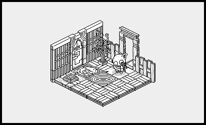

2023
17E
2023-03-03 Biosonic
I've been working on completing Oquonie, implementing sounds, writing the music and making sure that it runs as smoothly as possible on as many different platforms as I can. This meant revisiting a lot of the implementation details. The month has flown by, but it has been a lot of fun learning about optimization.
17D
2023-02-24 Oquonie is nearly ready
The weather has been absolute garbage and so has been a great help in completing the Oquonie port. Not only is the project pushing Uxn further than it previously ventured, but it is equally pushing the tools used in its creation. The building of Oquonie has had me do some significant improvements to Drifblim, Uxnlin, and Left.
17C
2023-02-07 Oquonie is happening!
After putting together a demo of what a Varvara implementation of Oquonie could look like, Rekka and I decided to officially port it. It's a lot of fun to revisit this little universe, and I can't believe how much progress we've done in just a few days, at this rate it will be playable within the month.
- Spared some time to fix a handful of issues in Orca.

17B
2023-01-20 Function Stacks
I've been reading about reversible computing and put together a playground that allows me to experiment with the ideas of psi-lisp. This whole business of time reversible logic feels like visiting an old friend.
Meanwhile, I've also tried to bring potato to a usable state, which means that for it to entirely replace the current launcher, it should be able to assemble and run the assembled rom, a state to which I am inching closer.
17A
2023-01-08 Pino Rewiring
Since the turn of the year, we have spent every waking hour rewiring Pino, it has been a more challenging project than we had hoped but we will sleep soundly knowing that each connection has been well made.
I've read Koopman's Stack Machines: The New Wave and it inspired me to experiment with other virtual machine designs, namely that of the NOVIX NC4016. But after two weeks of experiments, I returned to writing Uxntal, partly because I do not feel limited in the realization of my ideas with my current stack, and partly because these sort of systems make for extremely obfuscated assembly languages. That being said, I can't seem to shake the craving to experiment with the Setun-70..
- Chose a new metadata format and implemented it.